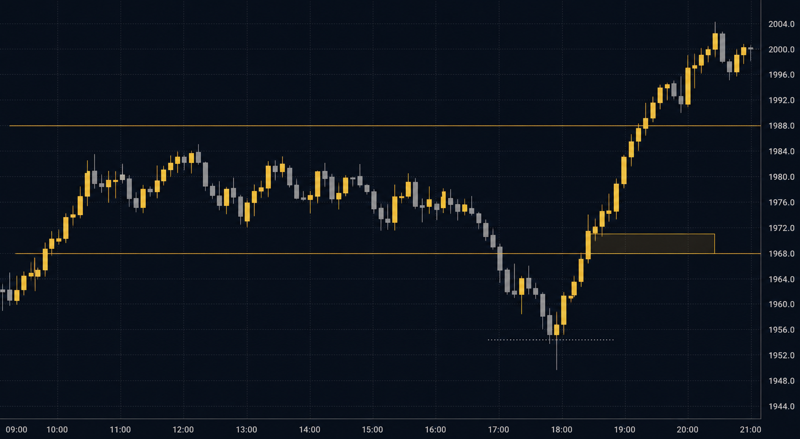

计划 ✓—
记录 ✓—
反思 ✓—
已分析
ANALYZED
LIVE
LOSS
Sep 3, 2026
BTCUSD——这场交易已结束。
改KAIZEN 回应
Your entry timing improved on this one — the confirmation candle closed before you acted, and that patience is what moved your Execution up. The loss itself is noise; the process that produced it is signal. One thing to watch: your confidence was a 7 pre-session but your reflection says you almost added size at +1.5R. That gap between declared confidence and in-trade impulses is exactly what the after-loss window tracks. Keep logging that urge honestly — it is the raw material for the next improvement.
你的记录
Clean session, executed the plan. Waited for the sweep and MSS confirmation before entry.
图表——如记录当时

与你记录本时段时看到的完全一样——随你的时段私密保存。
你的反思
发生了什么： Entered as planned and held through the squeeze.
你学到的： The five-minute timer works when it matters most.
你会改变的： Nothing this time.